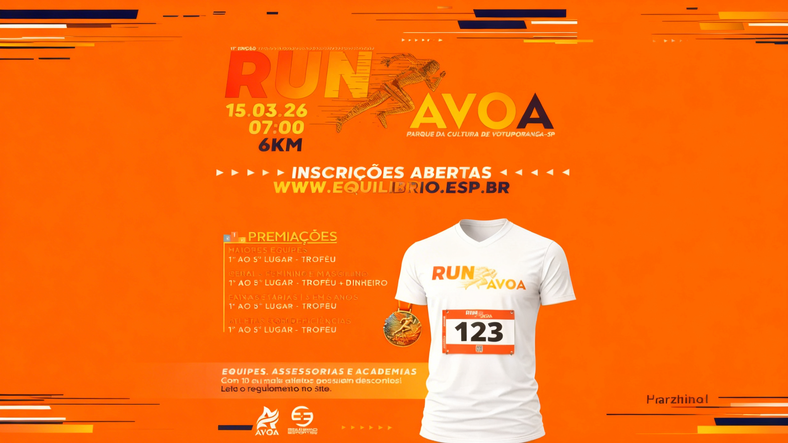
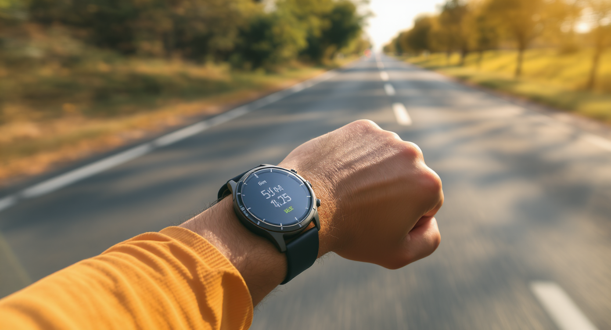

RUN AVOA 2026 Votuporanga: Tudo Sobre a Prova + Dicas de Preparação
A 11ª edição da RUN AVOA está chegando! Saiba tudo sobre a prova, como se inscrever e como se preparar da melhor forma para arrasar em Votuporanga-SP.
Ler artigo completo →
A 11ª edição da RUN AVOA está chegando! Saiba tudo sobre a prova, como se inscrever e como se preparar da melhor forma para arrasar em Votuporanga-SP.
Ler artigo completo →Quer começar a correr mas não sabe por onde começar? Este guia completo vai te ensinar tudo que você precisa saber para dar os primeiros passos com segurança e motivação.
Ler artigo completo →
Planilha completa de 8 semanas para você conseguir correr seus primeiros 5km. Progressão segura, sem lesões e com resultados garantidos.
Ler artigo completo →Descubra os erros mais frequentes que iniciantes cometem e aprenda como evitá-los para progredir mais rápido e com menos riscos de lesão.
Ler artigo completo →Pare de seguir planilhas genéricas e tenha um acompanhamento profissional
Falar com a Karina no WhatsApp